I was commissioned to create a generative artwork system for the 2023 US Women's Open. The system produced 3,010 unique artworks that evolved in real-time as live data streamed in throughout the tournament.
The artworks were given to fans, transforming the data into a visual and collectible experience that unfolded alongside the competition, deepening engagement.
Experience Strategy
The US Golf Association were keen to create a new kind of fan engagement, positioning the championship at the intersection of sport and innovation. I was brought on board to create a collection of 3,010 artworks, generated by the tournament itself.
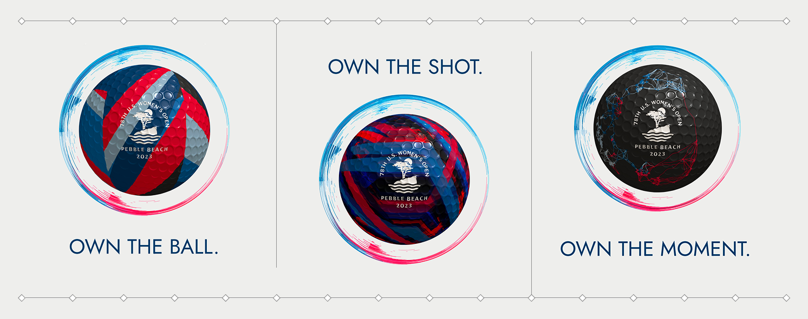
By mapping the 17th hole at the Pebble Beach course into a grid, each artwork was tied to a specific "plot" and directly responded to shots that landed in or nearby that area. As play unfolded, real-world events continuously shaped each piece, creating a set of unique artworks that tell a story about the tournament.
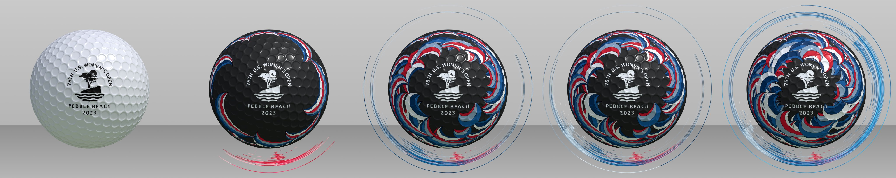
Transforming the data
With access to rich, laser-tracked information from each golf stroke, I made use of metrics like:
- distance travelled
- apex height reached
- proximity to the plot
- angle from the plot
- round
- time during round
- landing in plot
I connected the artworks to a live feed of this data and transformed it into a collectible experience that was both technically driven and emotionally engaging for fans.
Below you can see a birds-eye view of the golf course on the left and the artworks on the right. I built this environment for debugging and demonstrations.
In this video we can see how one artwork evolves during the tournament, as strokes take place.
Collectibles
Each artwork was randomly assigned to a grid location at the time of creation, introducing an element of chance and collectibility for fans.
The following video shows different artworks in relation to their grid location.
This introduced a game layer, encouraging fans to track performance, compare outcomes and invest in the tournament as it unfolded.
Some pieces were more active than others and key moments like "longest hole out" and "closest to the hole" triggered additional badges to be awarded to artworks.
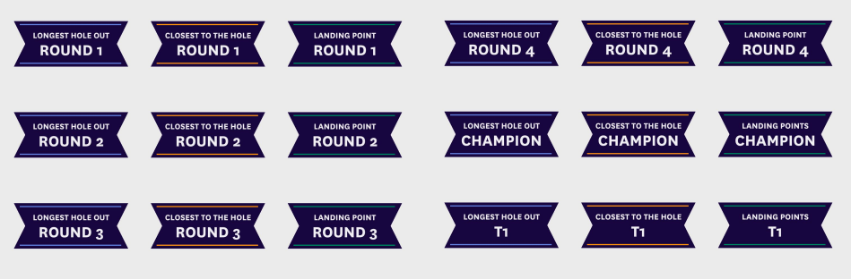
Artwork
I design and developed the data responsive artwork in p5js and Threejs. Each piece includes direct visualisations of the strokes encircling the ball, and a more abstract interpretation on the ball itself.
To add variety to the collection, I created a total of 8 pattern options and 11 colourways. Each artwork chooses a pattern and colour option at random.
The "Champ" colour palette was chosen to represent the USGA brand colours. Here's a selection of examples demonstrating the variety available.
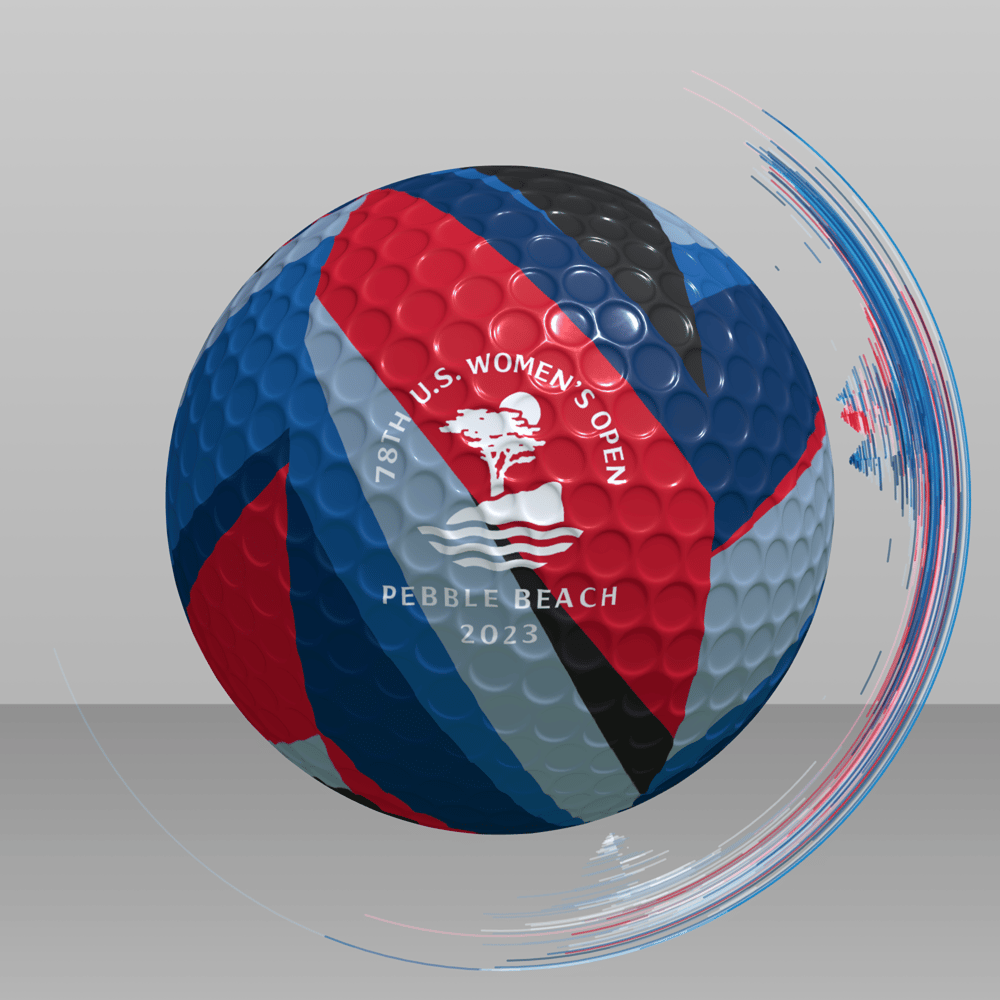
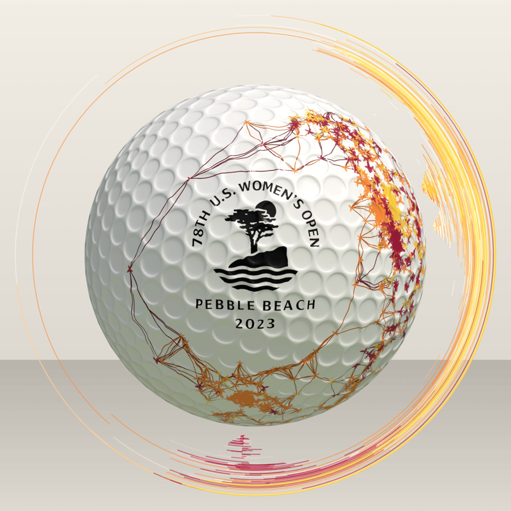
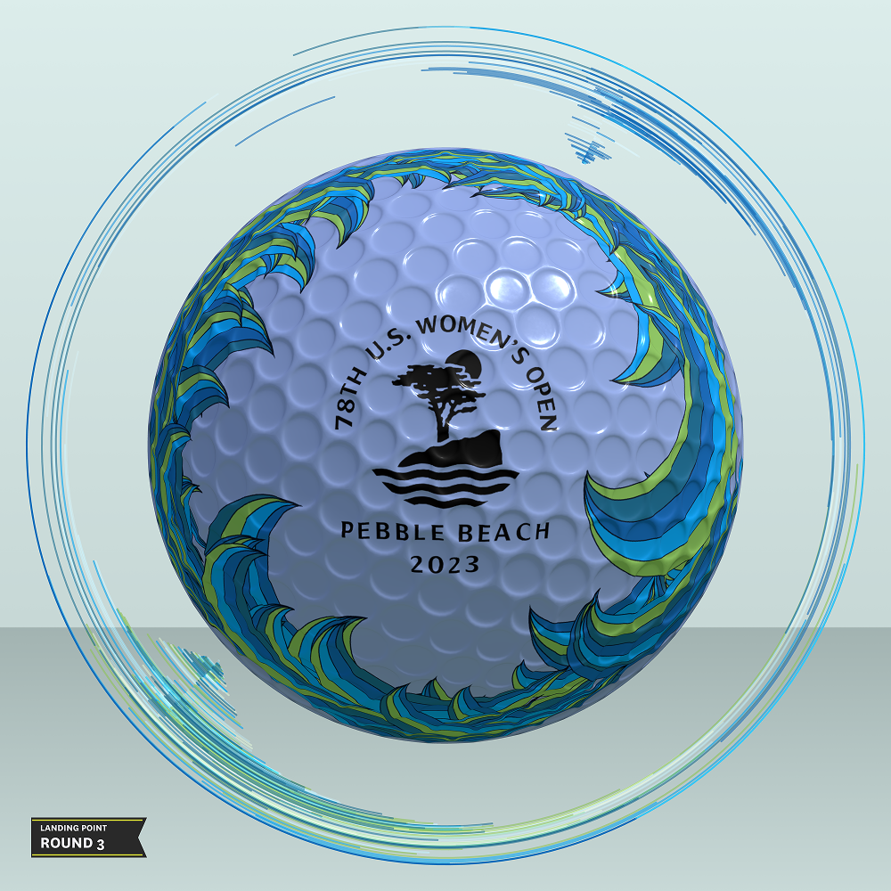
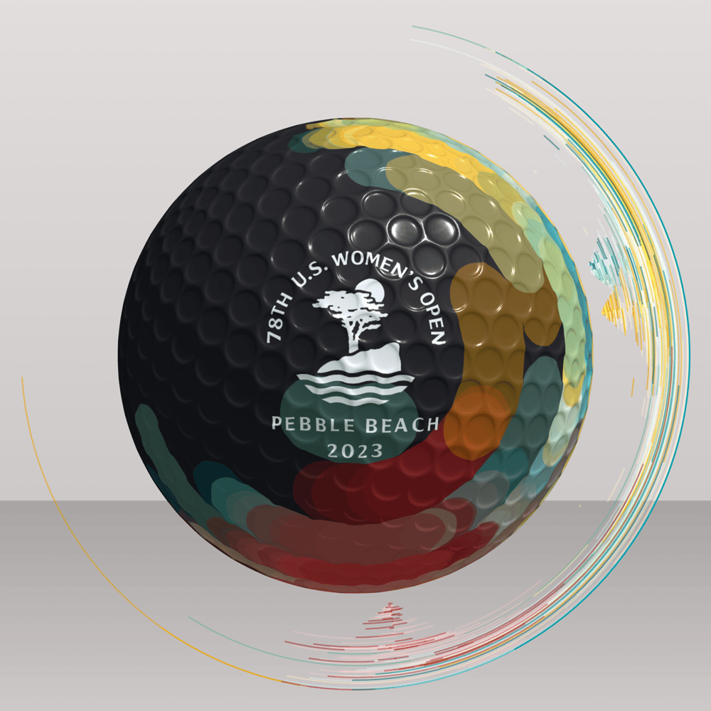
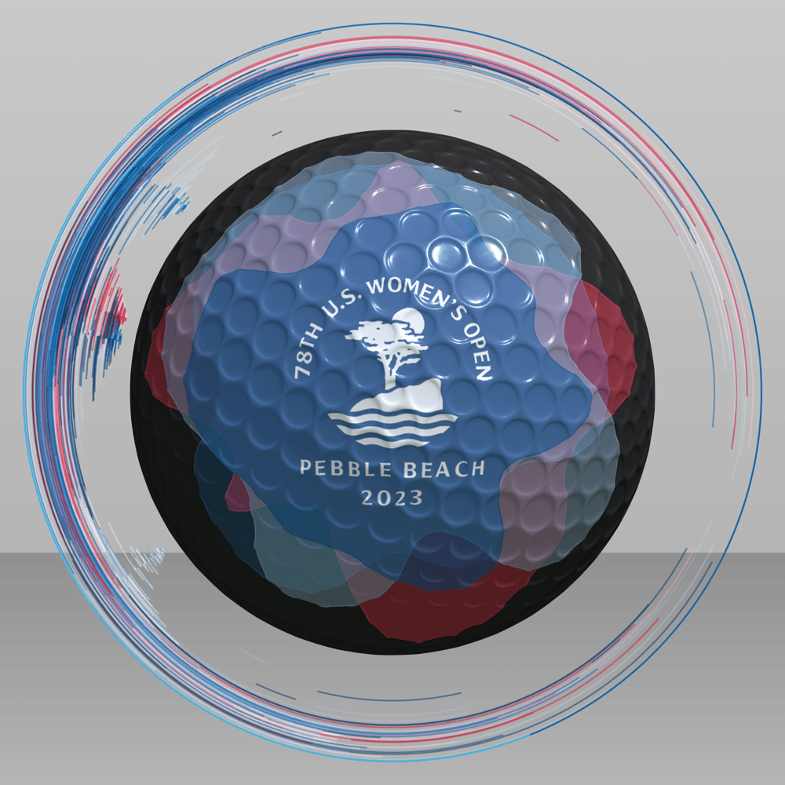
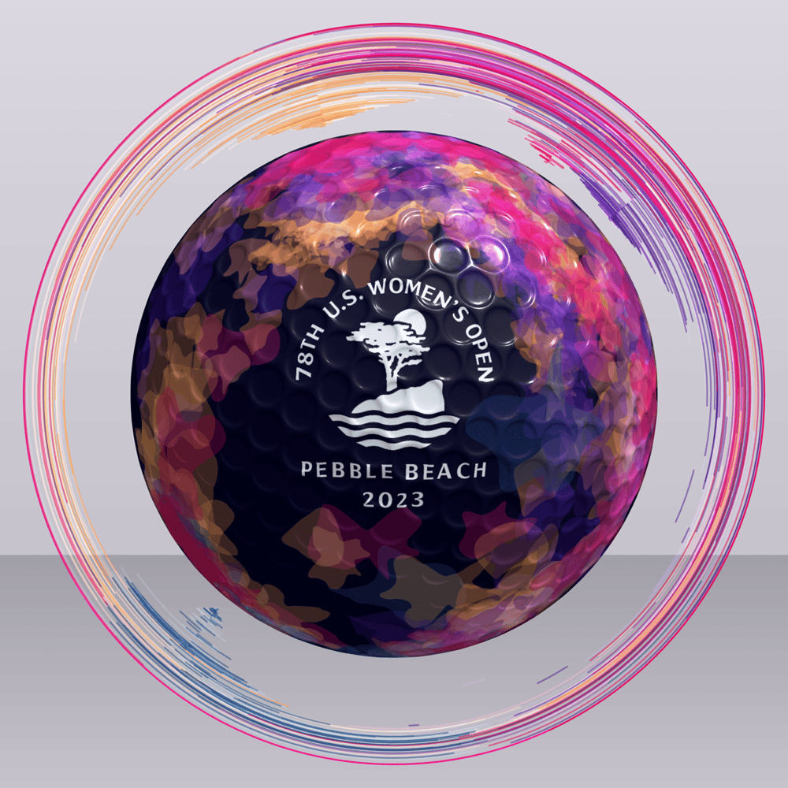
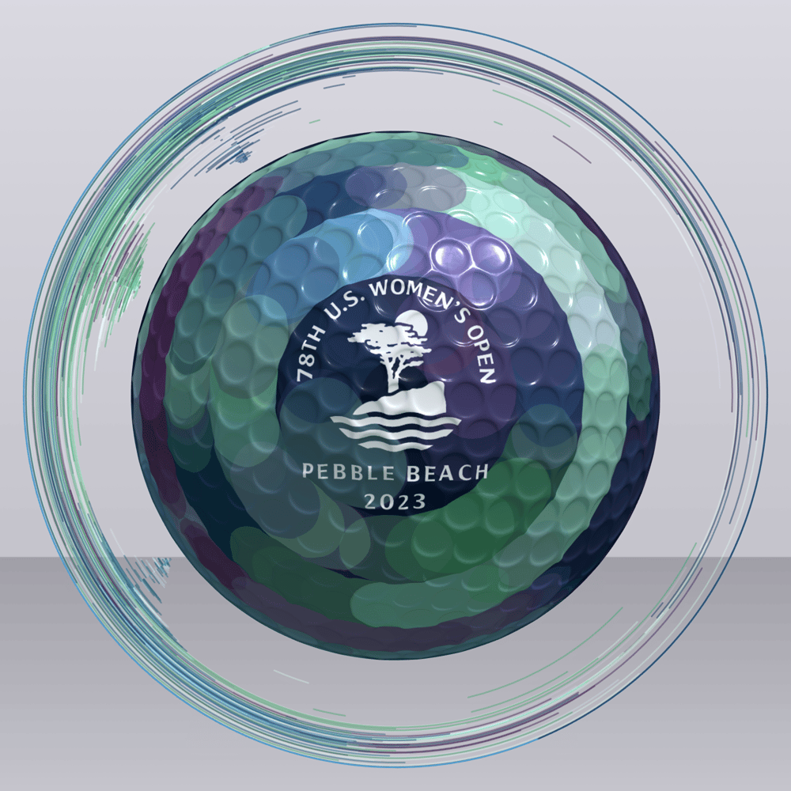
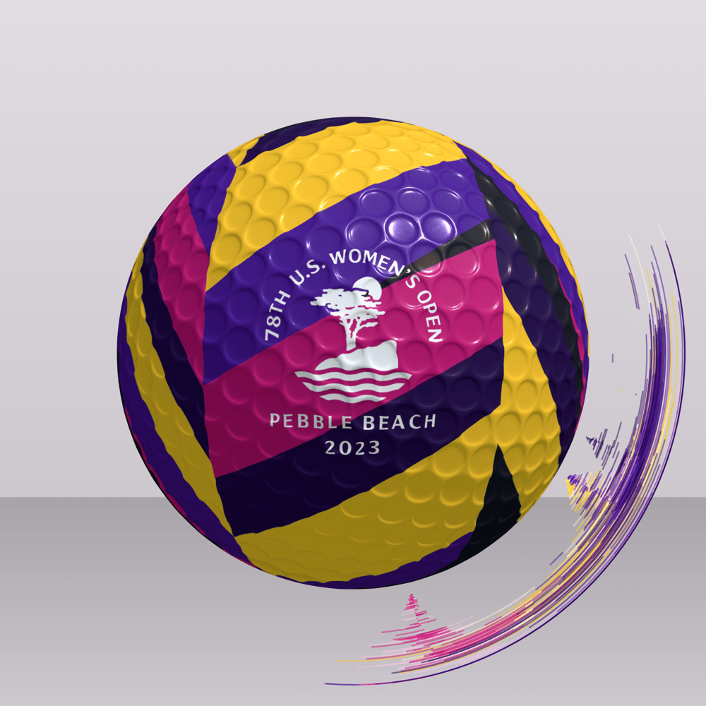
Engagement
The project extended beyond the tournament itself, with fans actively sharing their artworks on social media.
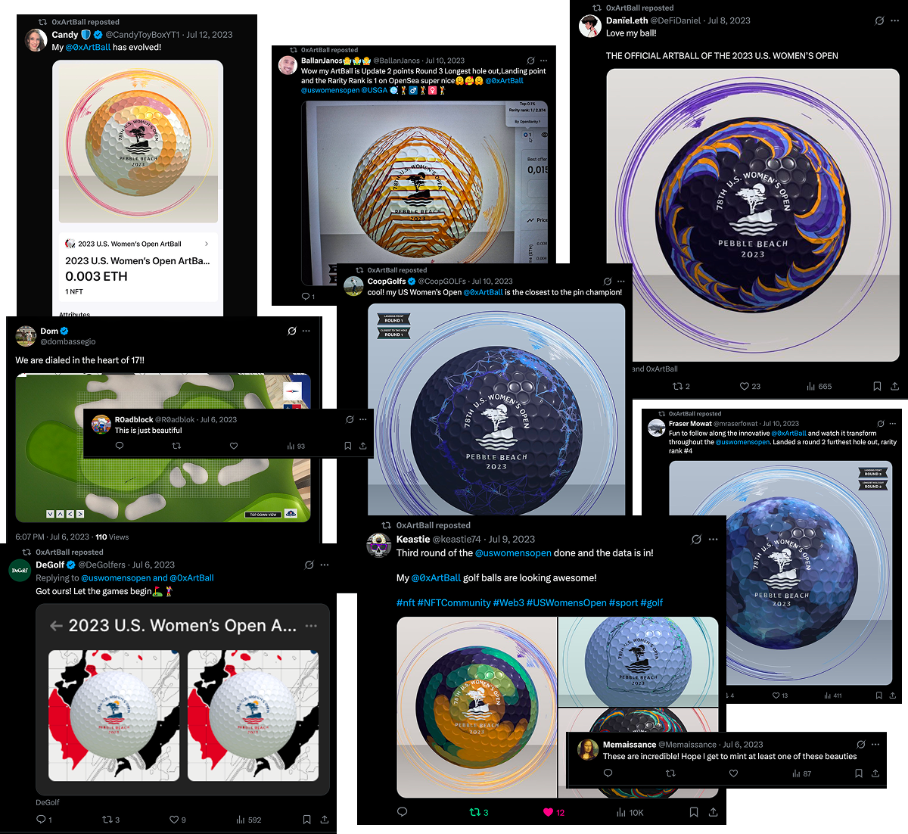
By turning live gameplay into a personal, evolving asset, the project created an ongoing relationship between fans and the tournament, extending engagement beyond passive viewing.